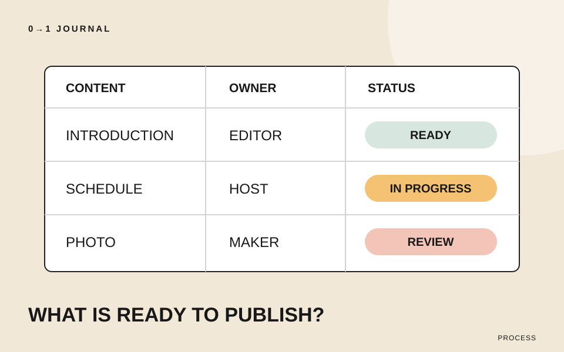

この記事の目次
レイアウトはできたのに、見出しの下には仮の文章、写真の場所には空の箱。制作が止まる原因が素材の不足なら、色や余白を調整しても先へ進めません。何が足りず、誰が次に動くかを一枚の表にします。
この記事では、架空の木工教室の体験ページを題材にします。扱うのは原稿と写真の準備状況です。公開する情報の決定を依頼者に代わって行うのではなく、確認すべき箇所を見える形にする練習です。
ページ単位の「原稿待ち」を、素材単位に分ける
「体験ページの原稿待ち」だけでは、紹介文がないのか、日程が未確定なのか分かりません。この例では「体験の説明」「開催日と時間」「持ち物」「完成品の写真」の四つに分けます。
表を細かくする基準は、別々の人へ依頼するか、確認の状態が違うかです。開催日と時間を同じ人がまとめて確定するなら、一行で扱っても構いません。文章を一文ずつ分割することが目的ではありません。
制作前に必要な情報を考える入口は、はじめての制作で決めておきたい5つのことでも扱っています。ここでは、そこから選んだ情報を実際にそろえるための管理表に進みます。
「届いた」と「掲載してよい」を別の状態にする
写真が届いても、それが今回作る作品の写真か、掲載してよいものかが未確認なら、準備完了とは扱いません。文章も、書きかけと確定原稿では状態が違います。
今回の表では「未着手」「作成中」「確認待ち」「確定」の四つを使います。これはこの模擬案件のための分類です。担当者が使い分けられる程度に絞り、状態を増やすなら意味も書いておきましょう。
次は記入例です。ここでは狭い画面でも読めるよう二列で示します。作業用の表では、用意する人、確認する人、状態、次の作業をそれぞれの列へ分けてください。担当者が同じ場合も役割は区別します。
| 素材 | 準備・確認の記録 |
|---|---|
| 体験の説明 | 制作担当が用意し、教室運営者が確認。現在は確認待ち。次は作業内容の表現を確認する。 |
| 開催日と時間 | 教室運営者が用意・確認。現在は作成中。次は開始時刻を確定する。 |
| 持ち物 | 当日の講師が用意し、教室運営者が確認。現在は未着手。次は必要な道具を整理する。 |
| 完成品の写真 | 撮影担当が用意し、教室運営者が確認。現在は確認待ち。次は掲載する一枚を選ぶ。 |
実際に使う表には担当者名、原稿や画像の保存先、確認を返してほしい日を追加します。期限は制作者が一方的に書くのではなく、用意する人と相談して決めてください。
足りない素材は、用途を添えて依頼する
「写真をください」だけでは、何を撮ればよいかの判断を相手へ残します。この例なら「体験で作る完成品の形が分かる写真を、作品紹介の欄に一枚載せたい」と伝えます。撮影する人が用途を判断できる説明にしましょう。
文章なら「紹介文をください」より、「初めて参加する人が当日の作業を想像できるよう、作るものと工程を教えてください」と聞けます。制作者が整文する場合は、事実を受け取る段階と掲載文を確認してもらう段階を分けます。
不足を想像で埋めるのは避けてください。所要時間が未確定なら、もっともらしい数字を入れるのではなく、表に確認待ちとして残します。画面の検討に仮の文を使う場合も、掲載用の確定原稿とは区別します。
公開日に間に合わない一行を、そのまま隠さない
準備表に未確定が残ったら、公開に必要な情報かを運営者と確認します。今回の体験案内では、開催日と開始時刻がなければ、参加する予定を立てるための情報が不足します。
一方、補足の制作風景写真は、完成品の写真と説明で内容が伝わるなら、後から追加する案も考えられます。これは今回の情報構成に基づく判断です。表から消して解決したことにせず、後日追加する担当と確認時期を残しましょう。
公開の可否を決めるときは、準備状況に加えて、完成条件を整理する記事のように利用者が必要な情報を得られるかも確かめます。
15分を目安に、未確定の素材を四つ書き出す
制作中の一ページを選び、まだ確定していない文章や写真を四つまで表にします。それぞれに用意する人と確認する人、次の作業を記入し、一行だけ依頼文を下書きしてください。
完成物は素材の一覧だけでなく、誰が何を返せば先へ進めるかが分かる表です。依頼内容を整理する練習には、ヒアリングの無料レッスンも利用できます。
記載内容へのご質問や訂正のご連絡は、hello@junkbranding.comまでお願いします。